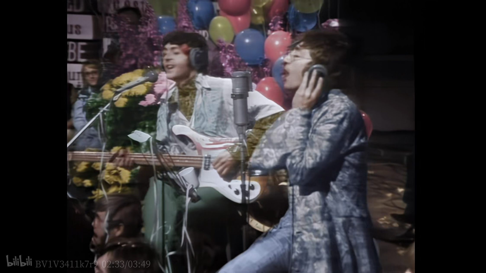
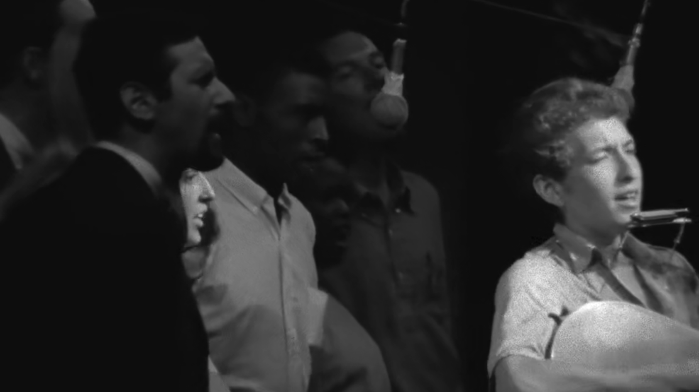
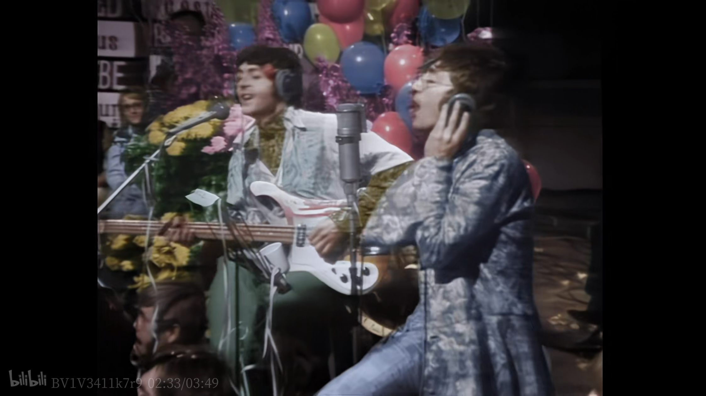
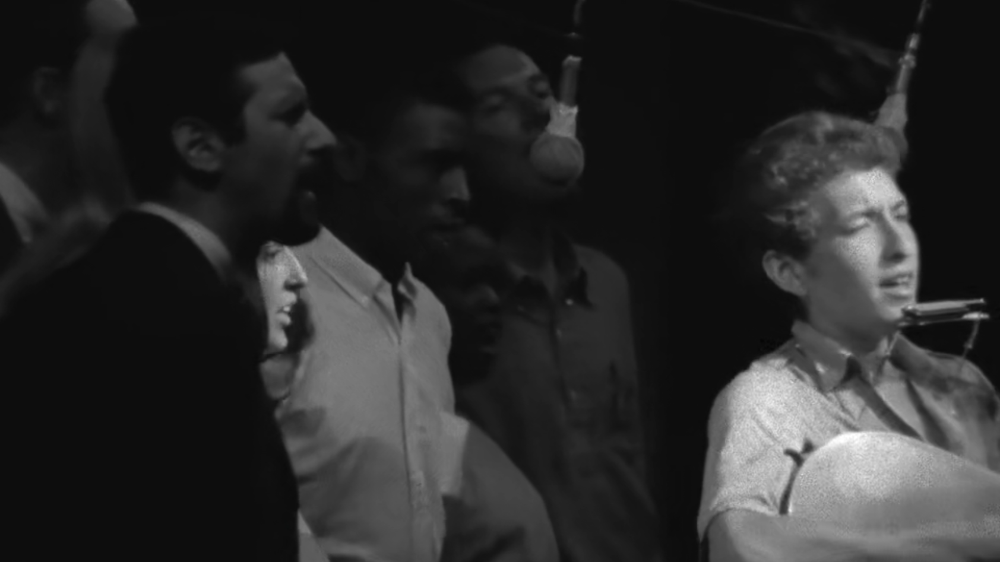
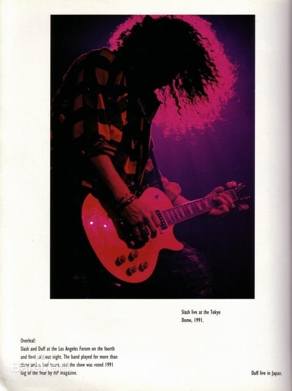
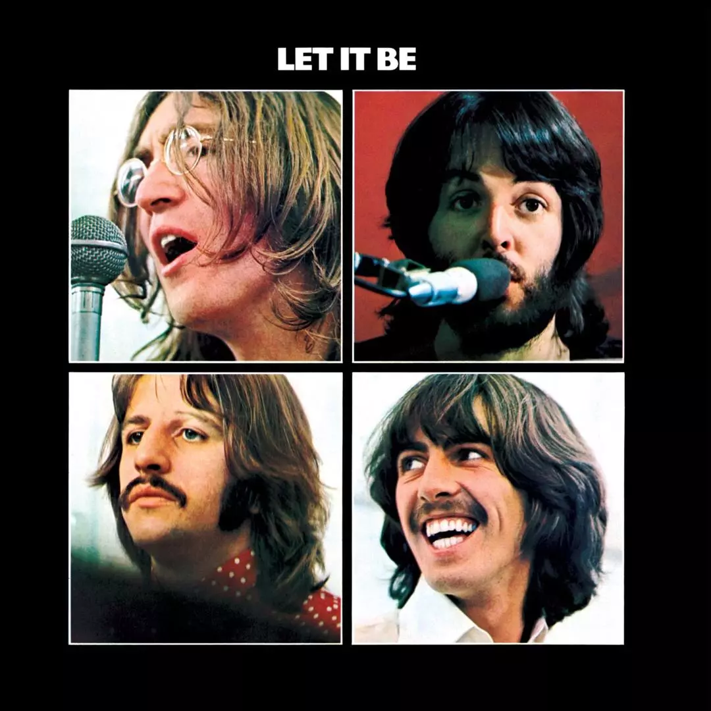
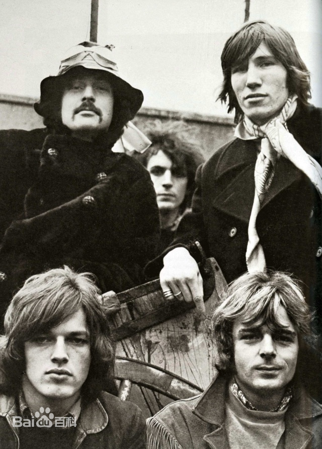

THE BEATLES
The Beatles，英国摇滚乐队，1960年成立于英国利物浦，由约翰·列侬、林戈·斯塔尔、保罗·麦卡特尼和乔治·哈里森四名成员组成。
1963年，发行乐队首张音乐专辑《Please Please Me》 ，该专辑连续30周获得英国官方专辑榜冠军。1964年，创下同时包揽美国公告牌百强单曲榜前五名的纪录 ；同年，获得第7届格莱美奖“最佳新人奖” 。1965年，发行歌曲《Yesterday》，该曲被MTV电视台以及《滚石》杂志选为“自1963年以来一百首最佳流行歌曲”第一名 ；同年，获得英国不列颠帝国勋章。1966年，推出迷幻摇滚风格的音乐专辑《Revolver》。1967年，发行的音乐专辑《Sgt. Pepper's Lonely Hearts Club Band》获得第10届格莱美奖“年度专辑奖”等四个奖项。1968年，音乐单曲《Hey Jude》连续九周登上美国公告牌百强单曲榜冠军 ；同年，发行同名音乐专辑《The Beatles》。1969年，发行的音乐专辑《Abbey Road》在国际受到广泛认可 。1970年，在发行音乐专辑《Let It Be》后，乐队宣布正式解散
PINK FLOYD
平克·弗洛伊德（Pink Floyd），英国摇滚乐队，由贝斯手罗格·沃特斯、吉他手大卫·吉尔摩、鼓手尼克·马森、键盘手理查德·怀特以及吉他手西德·巴勒特组成。
1965年，乐队在伦敦成立，并与百代唱片签约。1967年，发行首张专辑《The Piper at the Gates of Dawn》。1968年，西德·巴勒特因病退出乐队 。1973年，发行专辑《月之暗面》，该专辑为乐队打开了美国市场，在美国专辑榜创下了741周的连续在榜纪录，其全球累计销量达4500万张 。1979年，发行专辑《迷墙》，该专辑在美国专辑榜蝉联了15周冠军；同年，理查德·怀特退出乐队 。1981年，入围第23届格莱美奖最佳摇滚乐队奖。1985年，罗格·沃特斯离开了乐队。1987年，理查德·怀特回归乐队。1994年，发行专辑《The Division Bell》，并举办了最后一次巡演。1995年，凭借歌曲《Marooned》获得第37届格莱美奖最佳摇滚演奏奖。1996年，入驻美国摇滚名人堂。2005年，乐队在“现场八方演唱会”上进行了重组演出；同年，入驻英国音乐名人堂 。2008年，获得极地音乐奖。2014年，推出最后一张录音室专辑《The Endless River》。2015年，大卫·吉尔摩宣布乐队解散。截止2016年，平克·弗洛伊德的唱片累计总销量已超过2.5亿张